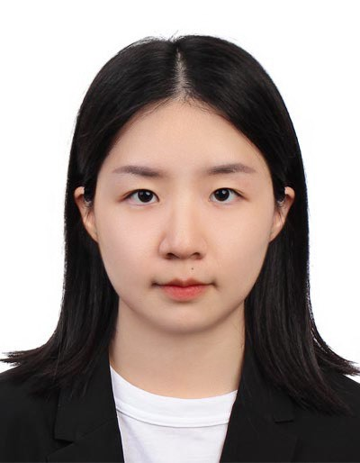

|  | Senior Research Engineer
|
I am currently a Senior Research Engineer with the Visual Intelligence Department, Institute for Infocomm Research (I2R), A*STAR, Singapore. I received the B.S. degree from the Wuhan University in 2016, and the M.S. degree from National University of Singapore, in 2018.
Deep learning and computer vision, with an emphasis on video understanding and reasoning, face recognition, and person reidentification.
Junn 2022: Received 1st Place Award in the EPIC-Kitchens Dataset Challenges Unsupervised Domain Adaptation for Recognition Track in CVPR2022.
Entropy guided attention network for weakly-supervised action localization
Yi Cheng, Ying Sun, Hehe Fan, Tao Zhuo, Joo-Hwee Lim, Mohan Kankanhalli.
Pattern Recognition, 2022.
Multi-view 3D object retrieval leveraging the aggregation of view and instance attentive features
Dongyun Lin, Yiqun Li, Yi Cheng, Shitala Prasad, Tin Lay Nwe, Sheng Dong, Aiyuan Guo.
Knowledge-Based Systems, 2022.
Image Understanding with Reinforcement Learning: Auto-tuning Image Attributes and Model Parameters for Object Detection and Segmentation
Fen Fang, Qianli Xu, Yi Cheng, Ying Sun, Joo-Hwee Lim.
IEEE Transactions on Circuits and Systems for Video Technology, 2022.
Action Relational Graph for Weakly-Supervised Temporal Action Localization
Yi Cheng, Ying Sun, Dongyun Lin, Joo-Hwee Lim.
IEEE International Conference on Image Processing (ICIP), 2021.
6D Pose Estimation with Correlation Fusion
Yi Cheng, Hongyuan Zhu, Ying Sun, Cihan Acar, Wei Jing, Yan Wu, Liyuan Li, Cheston Tan, Joo-Hwee Lim.
International Conference on Pattern Recognition (ICPR), 2020.
Senior Research Engineer, Institute for Infocomm Research, A*STAR, Apr 2022-Present.
Research Engineer, Institute for Infocomm Research, A*STAR, Jan 2019-Apr 2022.
Research and Development Engineer, Panasonic R&D Center Singapore, Dec 2017-Jan 2019.
Research and Development Intern, Panasonic R&D Center Singapore, May 2017-Nov 2017.
Invited reviewer of CVPR2022, ECCV2022, ICIP2022, ICME2021.
{kind=link}
{kind=link}
{kind=link}